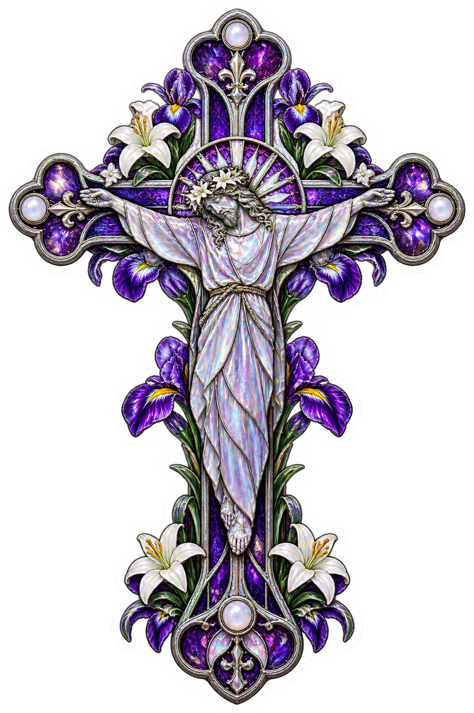
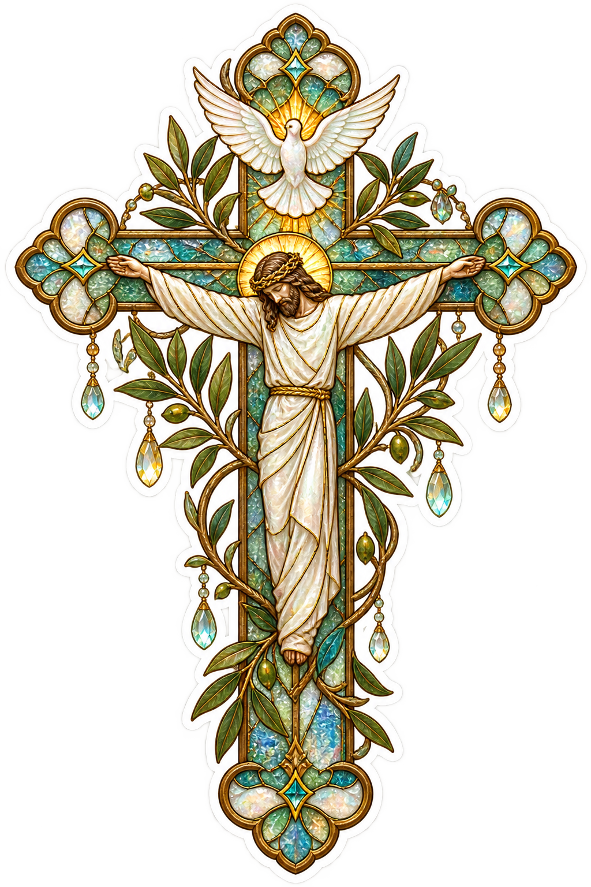
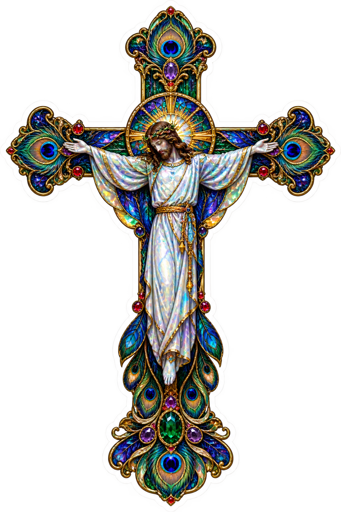
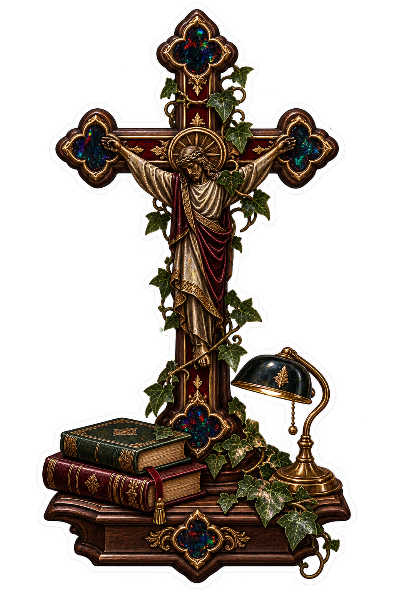
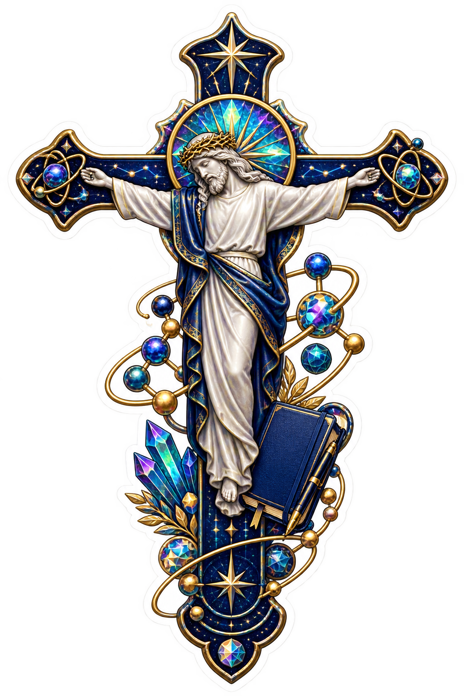

Study light.
Cathedral color.
Ten jewel-window and campus-inspired crucifix stickers with symbolic, age-appropriate design language.
Original NorthStar artwork with no student people, school identities, mascots, institutional logos, readable text, gore, or rectangular mockups.
Printed to order; price and delivery confirmed before payment.
Rainbow Rose Window
A full-spectrum rose window assembled from jewel-like sacred glass.

Amethyst Lily Cathedral
Violet cathedral panes bloom into luminous lilies.
Celestial Moon & Stars
Moonlit glass and tiny stars form a quiet celestial devotion.

Dove & Olive Branch
A peaceful dove and olive branch rendered in radiant leaded glass.

Peacock Jewel Window
Peacock iridescence becomes a precise stained-glass jewelwork pattern.
Blush Rose Pearl Study
Soft rose color, pearl light, and refined study-desk ornament.
Varsity Laurel Ribbon
A brand-free campus laurel with spirited ribbon geometry.

Dark Academia Book & Ivy
An old book, climbing ivy, and scholarly cathedral shadow.

STEM Constellation Molecule
Molecular geometry joins a star map in precise luminous glass.
Graduation Laurel Starlight
Laurel leaves and rising starlight honor a hard-earned finish.